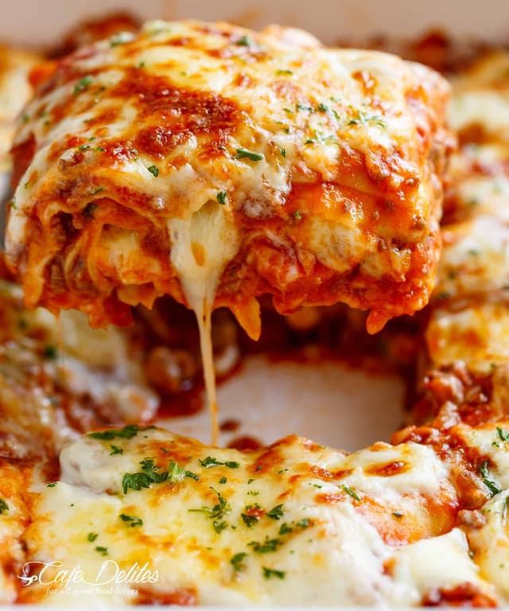

Lasagna

Description
This is my mom's special homemade lasagna recipe with a meaty, made-from-scratch tomato sauce and a deliciously cheesy filling. A more traditional homemade lasagna filling would be made with ricotta but my mom's recipe calls for a blend of small-curd cottage cheese and Parmesan.I have found none better anywhere. Serve with a leafy green salad and crusty garlic bread.
Prep Time:
1h25 mins
Cook Time:1h15 mins
Servings:8
Ingredients
- ½ pound ground pork, ½ pound lean ground beef
- A diced onion
- can of tomato sauce and a can of crushed tomatoes.
- Two tablespoons of parsley and crush one clove of garlic.
- Sugar
- dried basil, dried oregano, salt, and black pepper
- cottage cheese and Parmesan
- Eggs
Steps
- Cook the ground meat in a skillet until browned and crumbly. Add the onion and continue cooking until it's translucent. Stir in the canned tomato products, half of the parsley, garlic, basil, 1.5 teaspoons of salt, oregano, and sugar.
- Boil the lasagna noodles in lightly salted water until they're al dente.
- Mix cottage cheese, Parmesan cheese, eggs, the remaining parsley, the remaining salt, and pepper in a bowl.
- Layer the ingredients according to the recipe (starting with sauce and ending with mozzarella) until the lasagna is assembled.
- Cover with foil and bake in the preheated oven for about half an hour. Remove the foil and continue baking until the top is golden brown.